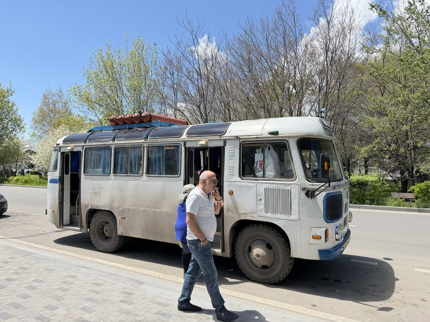
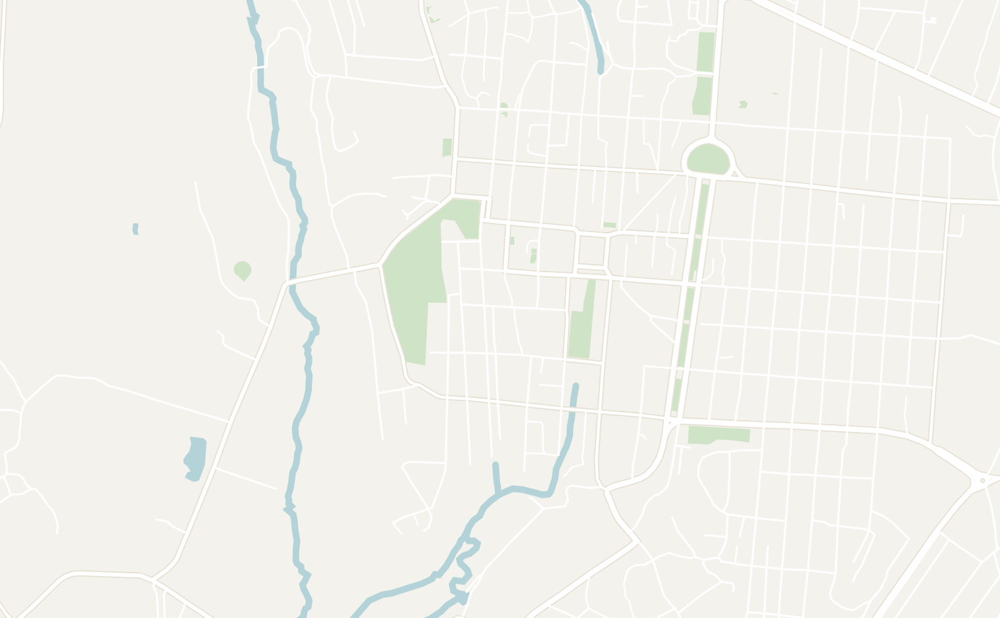
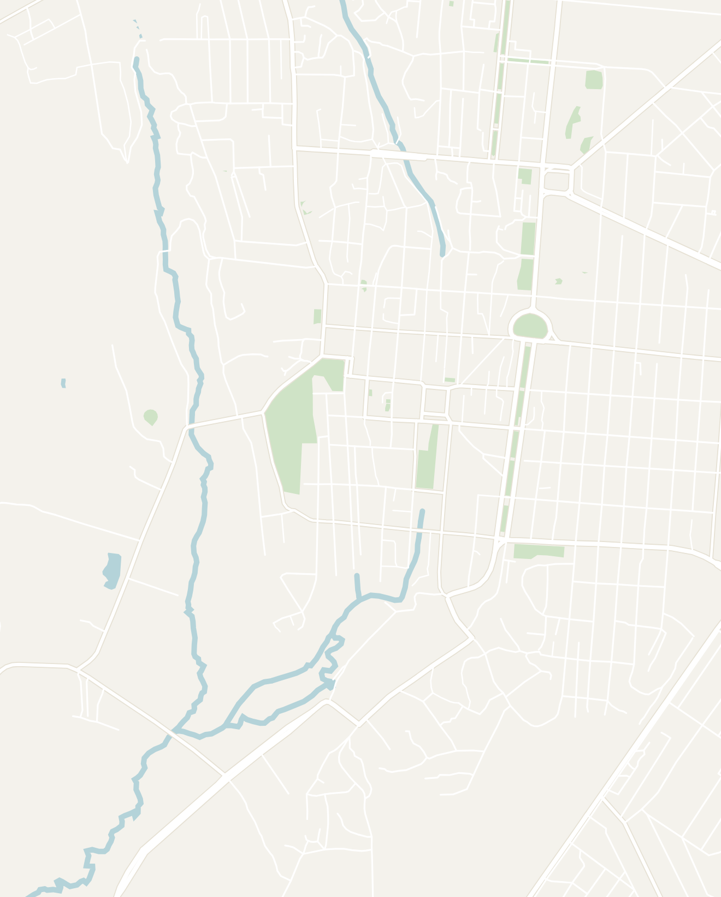
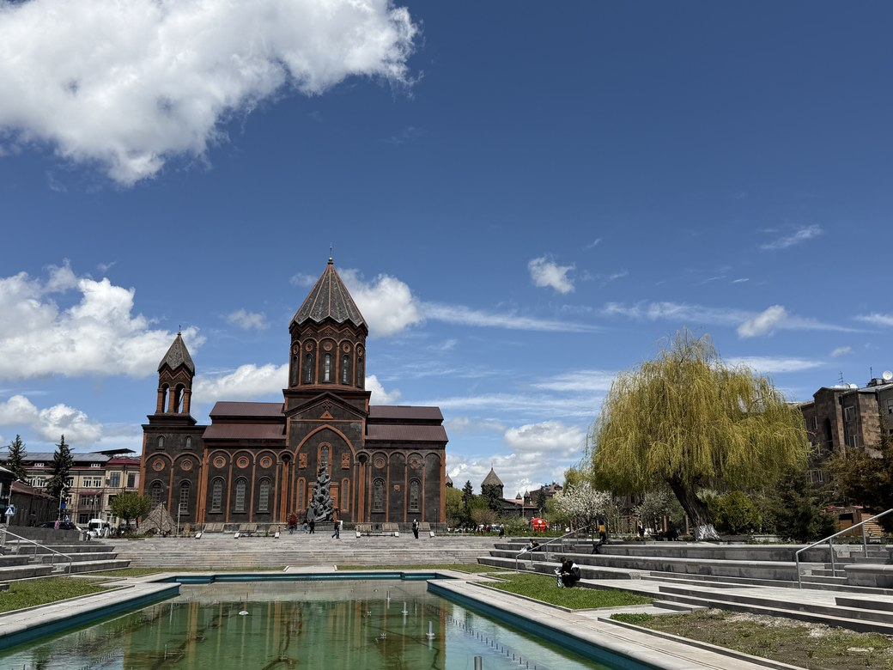
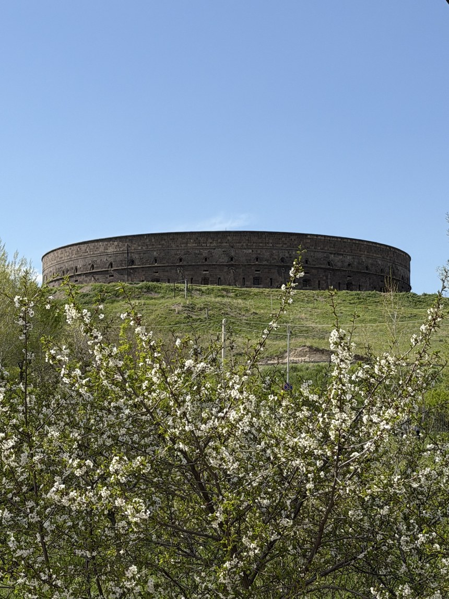
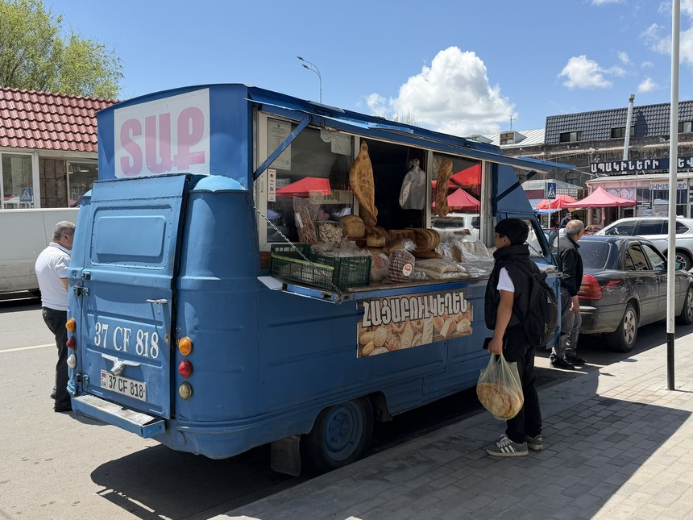
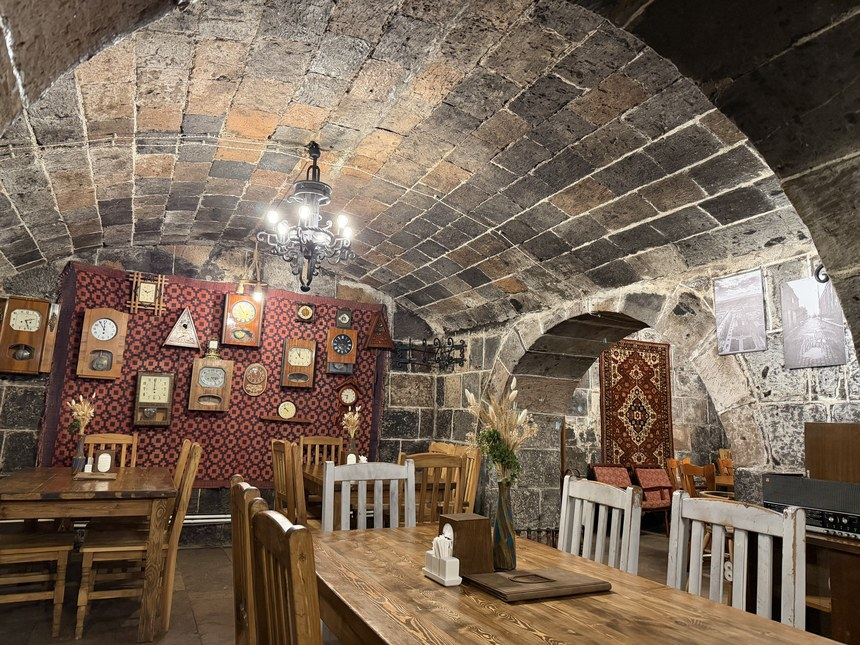

Overview
Gyumri was one of the biggest surprises in Armenia. In 1988, a 6.8-magnitude earthquake destroyed much of the city and northern Armenia, and every travel guide I read beforehand made it sound like it was still in ruins. I almost didn't spend a day here. It was quite the opposite: Gyumri was gorgeous on the spring day I visited, and one of the most interesting places in the country that tourists skip.
The city is the second largest in Armenia and also known as the "black city," after the dark volcanic stone its old center is built from. Gyumri has more traditional Armenian architecture than anywhere else in the country. It is one of the easiest day trips from Yerevan, 2.5 hours northwest by road. You can see all the highlights in one unhurried day: I took the morning marshrutka up and was back in Yerevan for dinner. I'd happily have spent longer wandering, so stay the night if you have the time.
Getting to Gyumri
The city of Gyumri lies near the Turkish border, about 120 km northwest of Yerevan by road. The best way to get there is to utilize Armenia's well-connected public transport system. You're likely coming from Yerevan, so here are the four main ways to get there:
- Marshrutka — your trip to Armenia wouldn't be complete without taking the most popular form of transport, a marshrutka. These are shared vans that leave when full. From Yerevan, vans leave from the parking lot behind Yerevan Railway Station. Walk through the underground tunnel at the station and you'll find the lot (or ask a local). There is roughly one Yerevan-to-Gyumri marshrutka an hour, starting from about 8 AM. The ride is about 3 hours for 1,500 AMD (about $4).
- Pro tip: Go directly to the railway station. Do not wait at the bus stop on Google Maps or Yandex, as the marshrutka does not actually stop often. I waited 20 minutes at a bus stop before figuring it out!
- Train — from the same station, you can also take a train between the cities. Tickets are available for purchase at the station. The ride takes 2 to 3 hours, but the train leaves less frequently than the marshrutka. You can check the current timetable and buy tickets online on the South Caucasus Railway website.

- Car — the scenery in Armenia is gorgeous with green valleys, small villages and snowcapped mountains most of the way, and renting a car is the best way to experience it. Renting a compact car runs about $30 to $40 a day. We rented a car from Routes Car Rental and had a seamless experience.
- Rideshare — a Yandex Go the whole way from Yerevan is possible. However, it is definitely the pricey option (by Armenian standards), so I would only do this if you missed the last train or marshrutka.
Gyumri — The City Itself
Gyumri isn't a tourist town and that's exactly what makes it special. It's a real, working city where people get on with their lives and provides an authentic glimpse into life in Armenia. And it has also held on to a lot of its Soviet past: there is the lively open-air market, old buses still run through town, and you'll stumble upon quirky Soviet relics while wandering through the side streets. I didn't run into a single other tourist all day.

The marshrutka drops you on the edge of town, and the center is a 10-minute walk from there through Gyumri Market. Everything else is walkable: most of the main sights are all within 20 minutes of each other. Visit all the sites in the Kumayri historic district, located in the center of the city, including St. All Saviors Church and the main square, see the cathedral, visit Central Park and wander the walking streets. Then, take a Yandex up the hill to Mother Armenia and the Black Fortress, which are easily visited together before heading back to Yerevan.


Double-tap to open in Google Maps
St. All Saviors Church

After leaving the marshrutka station, I stumbled upon a beautiful plaza leading up to St. All Saviors Church (Surb Amenaprkich in Armenian). A long, reflective rectangular fountain lies in front of the church with a smooth marble walkway and willow trees running along both sides. It was a glorious sight on the clear spring day that I visited. There is also a nightly fountain show in the evenings during the summer here.

At the far end, in front of the church, is a heavy brutalist memorial to the victims of the 1988 earthquake, with desperate bronze figures pulling each other out of broken concrete slabs. It serves as a bleak reminder of how the earthquake completely destroyed the city of Gyumri. Nearby, you can also find pieces of the church lying in the grass that fell off the facade during the earthquake.
St. All Saviors Church lies right behind the statue and is built out of the black stone characteristic of Gyumri, with an orange stone trim. Go inside: it feels much more flashy, Eastern Orthodox than the minimalistic monasteries out in the countryside, with light streaming down through the windows onto a freshly painted dome. It's free and worth a quick 15-minute stop.
Vardanants Square
Walk around to the front of the church and you're on Vardanants Square, the main square of Gyumri. It's surrounded by Gyumri City Hall, the Cathedral of the Holy Mother of God and some of the most popular restaurants in the city, including KTOR M, so it's a great place to get your bearings before exploring the rest of the city.
The square gets its name from the Battle of Vardanants in AD 451, when the Armenians fought the Persian Empire rather than give up Christianity. Although they ultimately lost the battle, they kept their faith. Vardanants Square memorializes the legacy of the Battle of Vardanants with large metal statues of their national heroes in the middle of the square.
Cathedral of the Holy Mother of God
My favorite spot in Gyumri was the Cathedral of the Holy Mother of God, also called Our Lady of Seven Wounds. It is a classic black Armenian church in an enormous yard full of trees. During the beautiful spring day when I visited, all of them were covered in white blossoms and it was a gorgeous sight.
The two main domes of the church fell during the 1988 earthquake and they now sit on the ground in the churchyard, where you can walk right up to them. It's still the main working church of the region, so you may walk into a service or a baptism. It's free, a 2-minute walk north of the main square, and worth 20 minutes.
Abovyan & Rijkov Walking Streets
The Kumayri historic district of the city is characterized by two pedestrian streets at the heart of the old town named Abovyan Street and Rijkov Walking Street. Both are lined with street lamps and black stone buildings with carved doorways, iron balconies and wooden gates that open onto courtyards. This is the part of Gyumri that survived the earthquakes, and it has more traditional Armenian architecture on a few blocks than all of Yerevan.
Both walking streets are relatively quiet during the day and come alive at night. Abovyan has the nicer shops, cafes and restaurants, while Rijkov is quieter, with street vendors selling snacks and cafes set up inside restored houses.

Wander onto the side streets and you'll feel a world away from the polished walking streets. The city is filled with remnants of the Soviet era that locals still use to this day. I stumbled upon tons of old communist statues, torn nationalist posters, old Ladas and a bright red hot dog cart straight out of the 1950s. Aimlessly wandering around Gyumri was the highlight of the day.
To see what's behind all those carved doorways, visit the Museum of National Architecture and Urban Life, a 19th-century merchant family's mansion a 10-minute walk from the main square, furnished the way a well-off Gyumri family lived before the Soviets.
Mother Armenia & the WWII Memorial

Once you've seen the highlights of the city center, head out to Mother Armenia of Gyumri, located on a small hill at the western edge of town. She towers over the city as the city's tallest sculpture, and to my eye is better looking than the more famous statue in Yerevan. It's a 20-minute walk from the center, but it started raining, so I took a Yandex up for just a couple of dollars.
The statue was unveiled in 1975 for the 30th anniversary of the Soviet victory in WWII. A long walkway leads up to the pedestal, past stones engraved with the names of the Soviet Hero Cities, the title the USSR gave the cities that fought hardest in WWII, and a double staircase climbs the last stretch.
Beside her is a WWII memorial built around a raised fist, with an eternal flame and fresh flowers. As a fan of brutalism, I thought the memorial really hit the spot! The monument is free and open all day; give it 30 minutes to explore the statue and the surrounding area.
The Black Fortress

The Black Circular Fortress (Sev Berd) sits on the next hill over, a short 5-minute walk from Mother Armenia. The Russian Empire built it in the 1830s, after a war with the Ottomans, to guard the new border. It's a perfect ring of black stone and looks medieval from outside. Once you get up close, you'll notice graffiti scratched into the walls in Russian and Armenian.
The inside has been completely rebuilt as an event space, with gold balconies and red curtains around the central hall. The Black Fortress now hosts concerts and exhibitions along with a small museum of old photos of the city. To be honest, the renovations make it feel more like a Medieval Times location than a historical site worth visiting. It's free to walk in, but it is only worth it if you're already up at Mother Armenia.
Gyumri Market

Back down in the center, pop into Gyumri Market, an open-air market that operates as the lifeblood of the city. Every day, locals do their grocery shopping among older women selling produce, butchers, fishmongers, spice stalls and a quirky blue Soviet-era bread truck.
In summer the fruit stalls fill up with apricots, cherries and peaches, and some stalls will grind coffee for you on the spot. It's open every day from about 9 AM to 6 PM (busiest in the morning) and it's only a 5-minute walk south of the main square. Gyumri Market felt more Middle Eastern than GUM Market in Yerevan. It's also the best place to pick up snacks for the marshrutka ride back!
Central Park
The last stop isn't the nicest park you'll ever see and is one of the creepiest parks I've ever been to. Gyumri's Central Park is a 5-minute walk west of Vardanants Square. If you're a fan of Soviet nostalgia, you'll probably love this place. Home to an old Soviet amusement park sitting among the trees, the central park is filled with Soviet art: a huge bas-relief of angels, an old telephone booth and kids' paintings that have seen better days. The amusement park still runs in the warmer months, with a Ferris wheel and, in one corner, an arcade of Soviet game machines that still operate to this day.
Where to Eat
The best places to eat in Gyumri lie around Vardanants Square and along the walking streets of Abovyan Street and Rijkov Walking Street. Wander around to see what tickles your fancy. Here are a couple personal recommendations:
KTOR M — an underground restaurant located around the corner from Vardanants Square. At first glance it looks fancy, but it's relatively affordable, and it was almost empty apart from one large family. Its name means "a piece of" in Armenian, and the room is done up in the colors of old Gyumri, with a menu of traditional Armenian dishes.
I ordered the khurjin, a knotted parcel of lavash stuffed with lamb, cheese and mushrooms. It was billed as a "must-try" dish in Armenia, but was a bit heavy for lunch. Overall, it's a nice environment and I would definitely recommend stopping by.

Ponchik Monchik — Gyumri is known across Armenia for its ponchik, a fried donut dusted with powdered sugar and filled with warm vanilla cream. You can also get it stuffed with chocolate and jam. This cafe on Abovyan Street is the most famous place to get one. Each one costs only about 400 to 550 AMD ($1 to $1.50).
For what else to order in Armenia, see the cuisine section of my Armenia itinerary. That's a wrap on Gyumri, the most surprising day of my trip to Armenia. If you're looking for more resources to plan your trip, visit my 7-day Armenia itinerary, Yerevan city guide and top 10 things to do in Armenia.